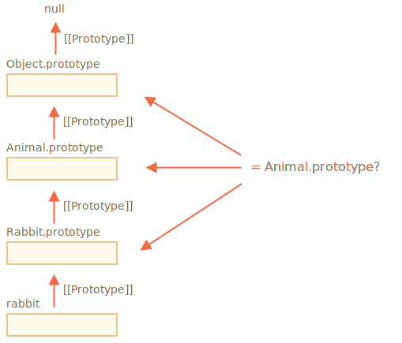

instanceof 操作符用于检查一个对象是否属于某个特定的 class。同时，它还考虑了继承。
在许多情况下，可能都需要进行此类检查。在这儿，我们将使用它来构建一个 多态性（polymorphic） 的函数，该函数根据参数的类型对参数进行不同的处理。
语法：
obj instanceof Class如果 obj 隶属于 Class 类（或 Class 类的衍生类），则返回 true。
例如：
class Rabbit {}
let rabbit = new Rabbit();
// rabbit 是 Rabbit class 的对象吗？
alert( rabbit instanceof Rabbit ); // true
它还可以与构造函数一起使用：
// 这里是构造函数，而不是 class
function Rabbit() {}
alert( new Rabbit() instanceof Rabbit ); // true……与诸如 Array 之类的内建 class 一起使用：
let arr = [1, 2, 3];
alert( arr instanceof Array ); // true
alert( arr instanceof Object ); // true有一点需要留意，arr 同时还隶属于 Object 类。因为从原型上来讲，Array 是继承自 Object 的。
通常，instanceof 在检查中会将原型链考虑在内。此外，我们还可以在静态方法 Symbol.hasInstance 中设置自定义逻辑。
obj instanceof Class 算法的执行过程大致如下：
如果这儿有静态方法 Symbol.hasInstance，那就直接调用这个方法：
例如：
// 设置 instanceOf 检查
// 并假设具有 canEat 属性的都是 animal
class Animal {
static [Symbol.hasInstance](obj) {
if (obj.canEat) return true;
}
}
let obj = { canEat: true };
alert(obj instanceof Animal); // true：Animal[Symbol.hasInstance](obj) 被调用大多数 class 没有 Symbol.hasInstance。在这种情况下，标准的逻辑是：使用 obj instanceOf Class 检查 Class.prototype 是否等于 obj 的原型链中的原型之一。
换句话说就是，一个接一个地比较：
obj.__proto__ === Class.prototype?
obj.__proto__.__proto__ === Class.prototype?
obj.__proto__.__proto__.__proto__ === Class.prototype?
...
// 如果任意一个的答案为 true，则返回 true
// 否则，如果我们已经检查到了原型链的尾端，则返回 false 在上面那个例子中，rabbit.__proto__ === Rabbit.prototype，所以立即就给出了结果。
而在继承的例子中，匹配将在第二步进行：
class Animal {}
class Rabbit extends Animal {}
let rabbit = new Rabbit();
alert(rabbit instanceof Animal); // true
// rabbit.__proto__ === Rabbit.prototype
// rabbit.__proto__.__proto__ === Animal.prototype（匹配！）
下图展示了 rabbit instanceof Animal 的执行过程中，Animal.prototype 是如何参与比较的：

这里还要提到一个方法 objA.isPrototypeOf(objB)，如果 objA 处在 objB 的原型链中，则返回 true。所以，可以将 obj instanceof Class 检查改为 Class.prototype.isPrototypeOf(obj)。
这很有趣，但是 Class 的 constructor 自身是不参与检查的！检查过程只和原型链以及 Class.prototype 有关。
创建对象后，如果更改 prototype 属性，可能会导致有趣的结果。
就像这样：
function Rabbit() {}
let rabbit = new Rabbit();
// 修改了 prototype
Rabbit.prototype = {};
// ...再也不是 rabbit 了！
alert( rabbit instanceof Rabbit ); // false
大家都知道，一个普通对象被转化为字符串时为 [object Object]：
let obj = {};
alert(obj); // [object Object]
alert(obj.toString()); // 同上这是通过 toString 方法实现的。但是这儿有一个隐藏的功能，该功能可以使 toString 实际上比这更强大。我们可以将其作为 typeof 的增强版或者 instanceof 的替代方法来使用。
听起来挺不可思议？那是自然，精彩马上揭晓。
按照 规范 所讲，内建的 toString 方法可以被从对象中提取出来，并在任何其他值的上下文中执行。其结果取决于该值。
[object Number][object Boolean]null：[object Null]undefined：[object Undefined][object Array]让我们演示一下：
// 方便起见，将 toString 方法复制到一个变量中
let objectToString = Object.prototype.toString;
// 它是什么类型的？
let arr = [];
alert( objectToString.call(arr) ); // [object Array]这里我们用到了在 一章中讲过的 call 方法来在上下文 this=arr 中执行函数 objectToString。
在内部，toString 的算法会检查 this，并返回相应的结果。再举几个例子：
let s = Object.prototype.toString;
alert( s.call(123) ); // [object Number]
alert( s.call(null) ); // [object Null]
alert( s.call(alert) ); // [object Function]可以使用特殊的对象属性 Symbol.toStringTag 自定义对象的 toString 方法的行为。
例如：
let user = {
[Symbol.toStringTag]: "User"
};
alert( {}.toString.call(user) ); // [object User]对于大多数特定于环境的对象，都有一个这样的属性。下面是一些特定于浏览器的示例：
// 特定于环境的对象和类的 toStringTag：
alert( window[Symbol.toStringTag]); // Window
alert( XMLHttpRequest.prototype[Symbol.toStringTag] ); // XMLHttpRequest
alert( {}.toString.call(window) ); // [object Window]
alert( {}.toString.call(new XMLHttpRequest()) ); // [object XMLHttpRequest]正如我们所看到的，输出结果恰好是 Symbol.toStringTag（如果存在），只不过被包裹进了 [object ...] 里。
这样一来，我们手头上就有了个“磕了药似的 typeof”，不仅能检查原始数据类型，而且适用于内建对象，更可贵的是还支持自定义。
所以，如果我们想要获取内建对象的类型，并希望把该信息以字符串的形式返回，而不只是检查类型的话，我们可以用 {}.toString.call 替代 instanceof。
让我们总结一下我们知道的类型检查方法：
| 用于 | 返回值 | |
|---|---|---|
typeof |
原始数据类型 | string |
{}.toString |
原始数据类型，内建对象，包含 Symbol.toStringTag 属性的对象 |
string |
instanceof |
对象 | true/false |
正如我们所看到的，从技术上讲，{}.toString 是一种“更高级的” typeof。
当我们使用类的层次结构（hierarchy），并想要对该类进行检查，同时还要考虑继承时，这种场景下 instanceof 操作符确实很出色。